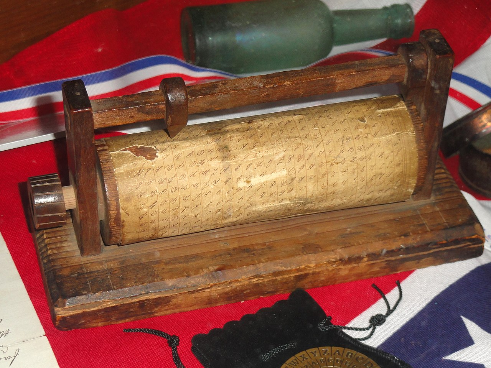
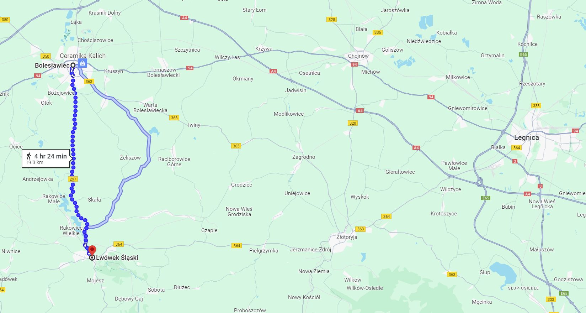
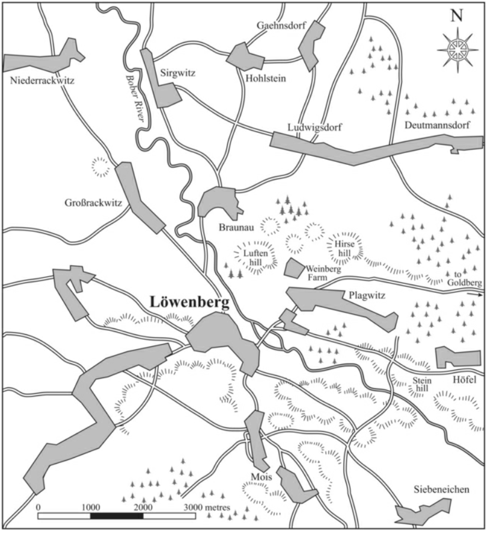
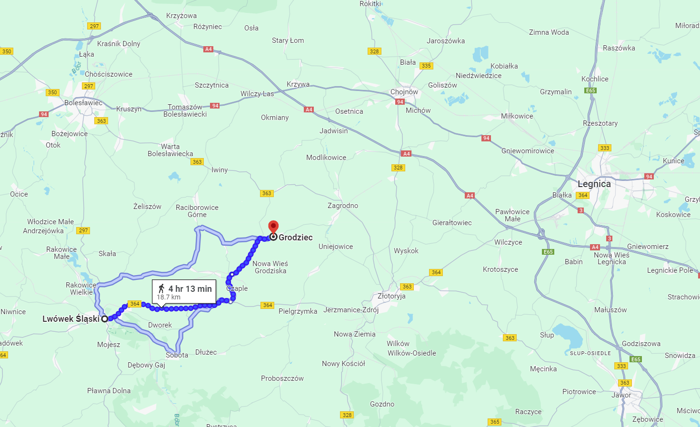
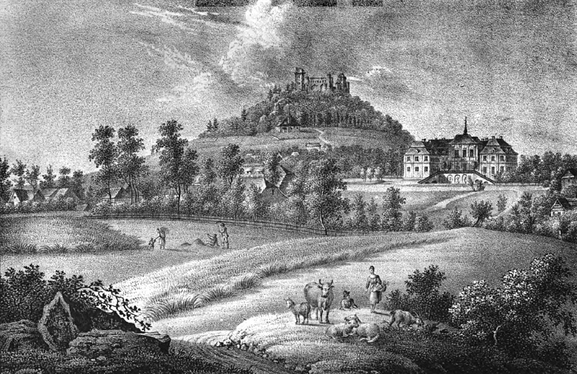
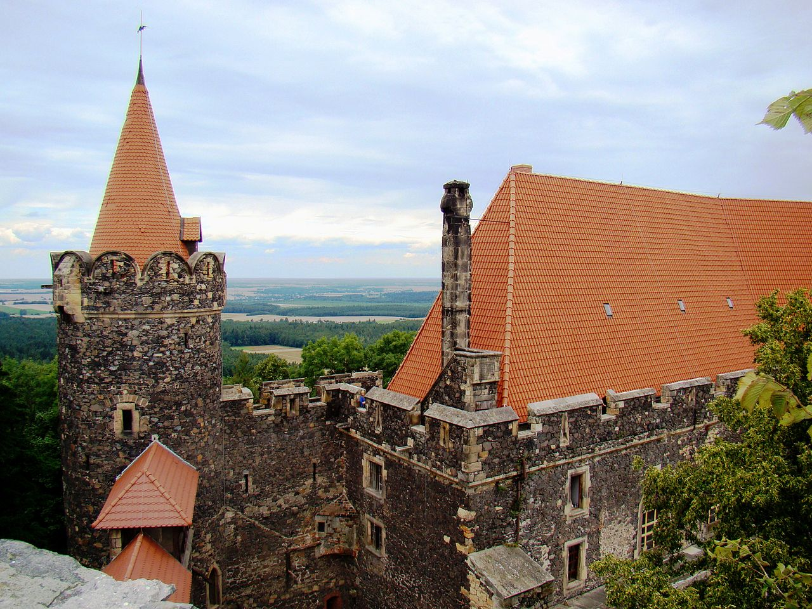

드레스덴을 향하여 (7) - 분위기 파악 못하는 블뤼허
게시: 2024-01-22T06:30:39+09:00
8월 20일 아침, 나폴레옹은 지타우(Zittau)에서 보헤미아 방면군이 드레스덴을 노릴 경우 어떻게 지타우 일대에서 막을 것인지를 살펴본 뒤 괴를리츠(Görlitz)를 향해 움직이고 있었습니다. 그런데 파발마로 들어온 슐레지엔 방면으로부터의 급보에는 막도날이 가지고 있던 암호키가 적군에게 탈취되었다는 소식이 들어 있었습니다. 바로 전날인 19일 시버나이헨(Siebeneichen) 마을에서 코삭 기병들이 막도날의 개인 짐마차를 노획할 때 벌어진 일이었습니다.

(당시 나폴레옹이 사용하던 암호키가 어떤 형태였는지는 모릅니다. 아마도 16세기부터 프랑스 육군에서 발전되어온 비쥬네르(Vigenère) 암호를 변형한 것을 쓰지 않았을까 하는데, 그랬다면 암호키라는 물건은 아마도 몇가지 키워드가 적힌 종이였을 것입니다. 그 비쥬네르 암호와 키에 대해서는 이 링크 https://nasica-old.tistory.com/6862427 를 참조하시기 바랍니다. 그 외에도 여러가지 암호키가 존재할 수 있는데, 사진은 미국 남북전쟁때 사용된 하드웨어식 암호키입니다.) 중요 화물이나 문서가 적의 척후병에게 노획당하는 일은 전쟁통에서는 흔히 일어날 수 있는 일 같지만, 당시 나폴레옹이 사용하던 암호키를 탈취당했다는 것은 차원이 다른 이야기였습니다. 그걸 탈취한 코삭 기병들은 그 중요성을 알아보지 못하고 블뤼허의 사령부에 전달하지 않았기 때문에 그 탈취로 인해 실제로는 별 다른 일이 일어나지 않았지만, 그걸 알 턱이 없던 나폴레옹에게는 비상사태였습니다. 나폴레옹은 괴를리츠로 가던 도중에 즉각 인근 작은 숲으로 들어가 임시 사령부(bureau de la guerre)를 열고 여기저기로 명령서를 적어 보냈습니다. 워낙 급하게 처리했기 때문에 나폴레옹은 서서 명령서를 구술했고, 그걸 받아적는 콜랭쿠르는 그냥 땅바닥에 앉아야 했습니다. 게다가 여기저기로 워낙 많은 사람들이 전령으로 파견되었으므로 나중에는 나폴레옹의 사령부에 사람이 부족할 지경이었습니다. 나폴레옹이 이렇게 급작스럽게 명령서를 보낸 대상들은 블뤼허의 전진에 대해 보버(Bober) 강변까지 계속 후퇴로 대응하던 네와 막도날 등의 군단이었습니다. 암호키가 탈취당했기 때문에 작전이 새나갈 수 있다고 본 나폴레옹은 이제 더 미루지 않고 당장 다음 날인 21일 블뤼허의 슐레지엔 방면군을 먼저 들이치기로 작정한 것입니다. 나폴레옹은 밤 늦게 네에게 더 세부적인 작전 명령을 보내 21일 오전 10시에 분츨라우에서 보버강을 건너되, 앞을 가로막는 적이 3만 이하의 규모라면 매섭게 추격하다가 방향을 남서쪽으로 휙 틀어서 전진하라고 지시했습니다. 그때까지의 정보를 취합해볼 때, 나폴레옹은 블뤼허의 주력부대가 분츨라우 쪽이 아니라 그 남쪽인 뢰벤베르크 일대에 있다고 정확하게 판단했기 때문에, 네로 하여금 블뤼허의 후퇴로를 끊도록 한 것입니다. 이렇게 네의 제3군단을 북쪽으로부터 적의 후방을 향해 일찌감치 우회하여 포위를 시도하도록 해놓고, 나폴레옹은 뢰벤베르크를 중심으로 좌익에는 자신의 고참 근위대와 마르몽의 제6군단, 중앙에는 로리스통의 제5군단, 우익에는 막도날의 제11군단을 두고 오후에 보버강을 건너 진격할 계획이었습니다.

(보시다시피 분츨라우는 북쪽이자 보버강의 하류, 뢰벤베르크는 보버강의 상류쪽인 남쪽에 위치했습니다. 저 멀리 동쪽에 보이는 큰 도시 Legnica의 독일어 이름이 Liegnitz이고, 거기가 카츠바흐(Katzbach) 강이 흐르는 곳입니다.) 한편, 블뤼허는 이런 사실을 전혀 몰랐습니다. 그는 자신의 진격 앞에 그랑다르메가 계속 후퇴만 하고 있는 이유가, 나폴레옹이 베르나도트를 치러 북쪽으로 가고 있기 때문이거나, 혹은 슈바르첸베르크의 보헤미아 방면군이 드레스덴을 향하고 있다는 소식을 듣고 허겁지겁 드레스덴으로 돌아가고 있기 때문이라고 생각했습니다. 그랬기 때문에 8월 20일 보버강에 도착한 이후 그랑다르메 군단들이 후퇴를 멈추는 것을 보고는 다소 의아해 했습니다. 블뤼허에게는 그랑다르메가 보버강 건너편에서 대체 무슨 수작을 꾸미는 것인지 알아내는 것이 급했습니다. 몇몇 기병 부대가 몰래 보버강을 건너 그랑다르메의 진영을 염탐하려 했지만, 하필 20일 밤부터 계속 비가 내리는 바람에 멀리서는 적의 동태를 살피기가 어려웠습니다. 그럼에도 불구하고, 곳곳에서 강 건너 적군에게 서쪽으로부터 속속 신규 병력이 도착하고 있다는 소식이 들어왔습니다. 특히 남쪽의 뢰벤베르크 일대에서는 그런 움직임이 매우 활발했습니다. 급기야 21일 오전 9시경, 뢰벤베르크 근처의 루프텐(Luften) 언덕 정상에서 적진을 염탐하던 프로이센 정찰부대에게, 그랑다르메 캠프가 갑자기 소란스러워지더니 "Vive l'Empereur!"라는 함성이 크게 들려왔습니다. 나폴레옹이 뢰벤베르크에 도착한 것이 분명했습니다. 이 소식을 듣고 달려온 요크와 랑제론도 군부대를 사열하는 나폴레옹의 모습을 강 건너에서 망원경으로 똑똑히 목격했습니다.

(보버강 서안에 위치한 뢰벤베르크 일대의 지도입니다. 루프텐(Luften) 언덕은 보버강 동안에 있습니다만 뢰벤베르크 일대를 감시하기 딱 좋은 위치에 있습니다.) 나폴레옹 본인이 등판했다는 이 청천벽력 같은 소식에 블뤼허 본인도 루프텐 언덕을 기어올랐습니다. 아직도 나폴레옹이 바로 강 건너에 있다는 사실을 반신반의하던 블뤼허가 정신을 차릴 수 없을 정도로 여기저기서 급보가 계속해서 날아들었습니다. 북쪽으로 고작 20km 정도 떨어진 분츨라우에서도, 강 건너의 네의 제3군단이 후퇴를 멈추고 포병 부대를 방열하는 등 보버강을 다시 건너 분츨라우로 진입하려는 기색이 뚜렷하다는 자켄의 급보가 도착했습니다. 이때 상황을 제대로 파악한 것은 현장의 블뤼허가 아니라 몇km 후방의 사령부에 있던 그나이제나우였습니다. 블뤼허는 여전히 그랑다르메가 반격에 나설 것이라는 것을 믿지 않았지만, 그나이제나우가 지도를 보니, 분츨라우에서 강을 건넌 네가 남쪽으로 방향을 틀어 랑제론과 요크의 측면을 위협하면 어떤 심각한 위협이 발생하는지 비로소 똑똑히 보였습니다. 그나이제나우는 즉각 전면적인 후퇴 명령서를 발부할 준비에 들어갔습니다. 만약 이것이 나폴레옹의 전면적인 반격이라면, 그나이제나우가 생각하는 최종적인 후퇴선은 동쪽으로 45km 정도 떨어진 리그니츠(Liegnitz, 폴란드어로는 Legnica)를 끼고 흐르는 카츠바흐(Katzbach) 강이었습니다. 하지만 루프텐 언덕에 올라가서도 여전히 분위기 파악을 못하던 블뤼허는 자신들이 선점한 고지가 이렇게 방어하기 좋은 곳인데 왜 후퇴를 해야하는지 전혀 이해를 못했고, 오히려 슐레지엔 방면군이 뢰벤베르크 약간 북쪽의 시어그비츠(Sirgwitz)에서 도강하여 그랑다르메를 쳐야 한다고 주장했습니다. 이때 평소부터 블뤼허 및 그나이제나우에 대해 '군대 실무는 제대로 할 줄도 모르면서 그저 할 줄 아는 것이라고는 적군이 도망치기를 기다리는 것 밖에 모르는 아마추어들'이라며 경멸하던 요크조차도 그나이제나우 편을 들면서 블뤼허에게 지금은 전진이 아니라 후퇴해야 할 때라고 설득했습니다. 그럼에도 불구하고 블뤼허는 대체 왜 자신들이 후퇴해야 하는지 이해할 수 없다면서 고집을 부렸습니다. 블뤼허가 그렇게 시간을 낭비하는 사이, 북쪽 분츨라우 방면으로부터 자켄의 급보가 날아들었습니다. 내용은 오전 10시에 네가 보버강을 건너 공격을 시작해 분츨라우를 점령했다는 것이었습니다. 네의 제3군단은 3만이 넘는 수준이었고 자켄의 병력은 1만5천에 불과했으므로 자켄이 밀려난 것은 어쩔 수 없는 일이었지만, 자켄은 약 3만 정도였던 네의 공격에 대해 '적군의 병력은 4~5만이며, 일부 보고에 따르면 이 공격은 나폴레옹이 직접 현장에서 지휘하고 있다'라며 호들갑을 떨었습니다. 뿐만 아니었습니다. 이 전갈이 당도한 직후인 오후 1시, 뢰벤베르크에서도 나폴레옹이 공격을 시작하는 엄청난 일제 포격의 포성이 들려왔습니다. 이렇게 벌어진 치열한 전투에서 러시아군도 프로이센군도 용감히 싸우긴 했지만 나폴레옹의 정면 공격을 오래 버텨낼 수는 없었습니다. 그런 상황이 되어서도 '여태까지 하던 대로 후퇴하지 않고 이렇게 공격하는 적의 의도를 모르겠다'며 전면적인 후퇴를 허락하지 않던 블뤼허는 바인베르크(Weinberg) 언덕에 올라 저 멀리 보버강 너머에서 끊임없이 몰려오는 그랑다르메의 부대들을 본 뒤에야그랑다르메가 여기서 결판을 내려고 한다는 것을 깨달았습니다. 때마침 강 건너편에서 용케 돌아온 스파이가 '정말 뢰벤베르크에 나폴레옹이 왔다'는 소식을 전해주자, 블뤼허는 오후 5시경 비로소 후퇴 명령을 내렸습니다. 결국 요크와 랑제론 등 뢰벤베르크 앞에 집결했던 블뤼허 휘하의 군단들은 2천이 넘는 사상자를 낸 뒤에 그뢰디츠베르크 인근까지 약 15km 이상을 후퇴해야 했습니다.

(그뢰디츠베르크는 대략 분츨라우와 뢰벤베르크와 함께 약간 찌그러진 정삼각형을 이루는 정도의 위치에 있습니다.)

(그뢰디츠베르크(Gröditzberg) 또는 그뢰디츠부르크(Gröditzburg)는 실은 도시가 아니라 언덕 위에 서있는 성 이름입니다. 이 곳이 폴란드 땅이 된 지금은 그로찌에츠(Grodziec) 성으로 불립니다. 12세기부터 요새의 기초가 다져진 이 곳에 15세기 경에 리그니츠(Liegnitz)의 대공이 지금과 같은 성을 짓기 시작했는데, 18세기 전반의 30년 전쟁 때 카톨릭 연합의 발렌슈타인(Albrecht von Wallenstein) 대공이 여기를 점령하고 파괴하여 한참동안 폐허 상태로 남아있었습니다. 그 이후 재건 노력이 계속되었지만, 나폴레옹 전쟁으로 인해 다시 재건 공사는 중단되었습니다. 이 그림은 1837년 그려진 그뢰디츠베르크 성의 모습입니다.)

(그뢰디츠베르크 성의 오늘날의 모습입니다. 나폴레옹 전쟁이 끝난 이후 다시 재건 공사가 계속되어, 19세기 중반 이후에는 유럽의 중산층들에게 이미 유명한 관광 명소가 되었다고 합니다.) 휴전 종료 이후 첫 전투를 깔끔하게 승리로 마친 나폴레옹은 뢰벤베르크로 돌아가 그날 밤을 보내면서 무척 기분이 좋았습니다. 그러나 생각해보니 그날 전투에서 적이 후퇴한 자리에 연합군 시체가 즐비하게 널렸음에도 불구하고 단 하나의 깃발도, 단 한 문의 대포도 나포하지 못했을 뿐만 아니라, 단 한 명의 포로도 잡지 못했다는 점이 마음에 걸렸습니다. 특히 휴전 기간 중 그랑다르메는 그 기병대를 상당 수준으로 보강했고, 그런 기병대가 후퇴하는 슐레지엔 방면군을 집요하게 추격했음에도 그랬습니다. 그랑다르메 기병대의 80% 정도가 불과 몇 개월 전까지 말을 타본 경험이 전혀 없던 신병들이라는 점이 그런 초라한 전과의 주된 이유였겠지만, 나폴레옹은 전투가 계속되고 기병대원들의 숙련도가 높아지면 그런 점은 차차 개선될 것이라고 판단했을 것입니다. 나폴레옹은 어쩌면 이때 뭔가 낌새가 이상하다는 것을 눈치 챘는지도 모르겠습니다. 연합군의 각 방면군이 트라헨베르크 의정서에 따라 자신과의 결전을 회피하고 후퇴하면서 조금씩 소모전을 벌이려고 한다는 것을 나폴레옹은 아직 모르고 있었을 텐데, 그렇게 불 같은 성격의 블뤼허가 저렇게 쉽게 물러나는 것은 좀 이상하다고 생각했나 봅니다. 문제는 그 뿐만이 아니었습니다. 이제 프랑스군은 더 이상 과거의 프랑스군이 아니었고, 프로이센군은 과거의 프로이센군이 아니라는 점이 가장 큰 문제였습니다. Source : The Life of Napoleon Bonaparte, by William Milligan Sloane Napoleon and the Struggle for Germany, by Leggiere, Michael V https://en.wikipedia.org/wiki/Vigen%C3%A8re_cipher https://en.wikipedia.org/wiki/Grodziec_Castle